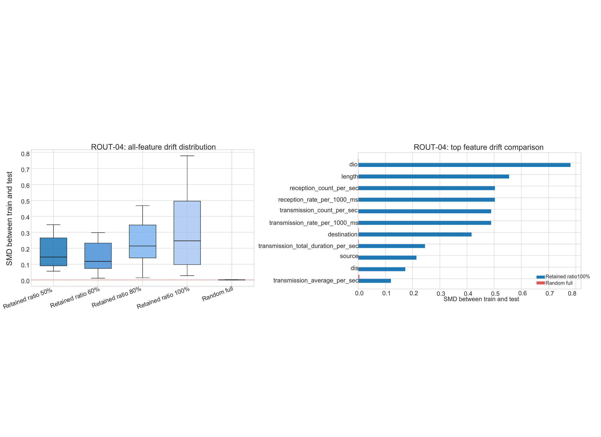
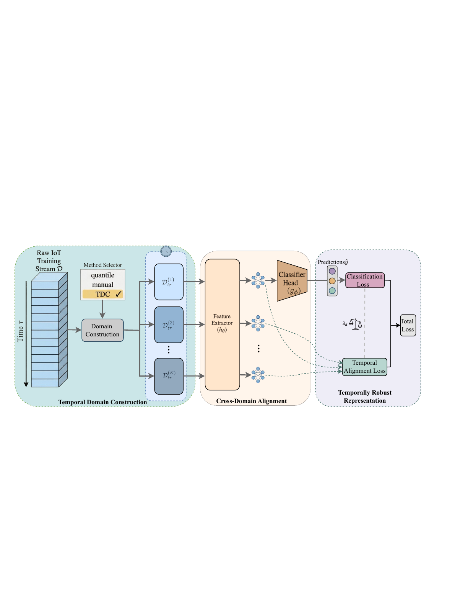
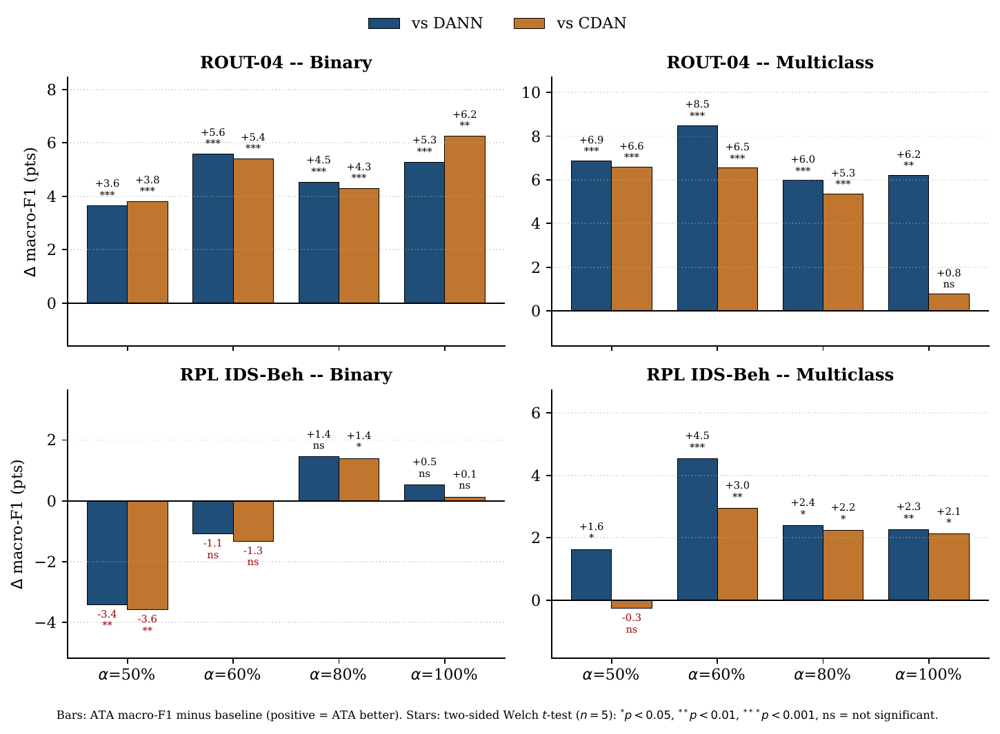
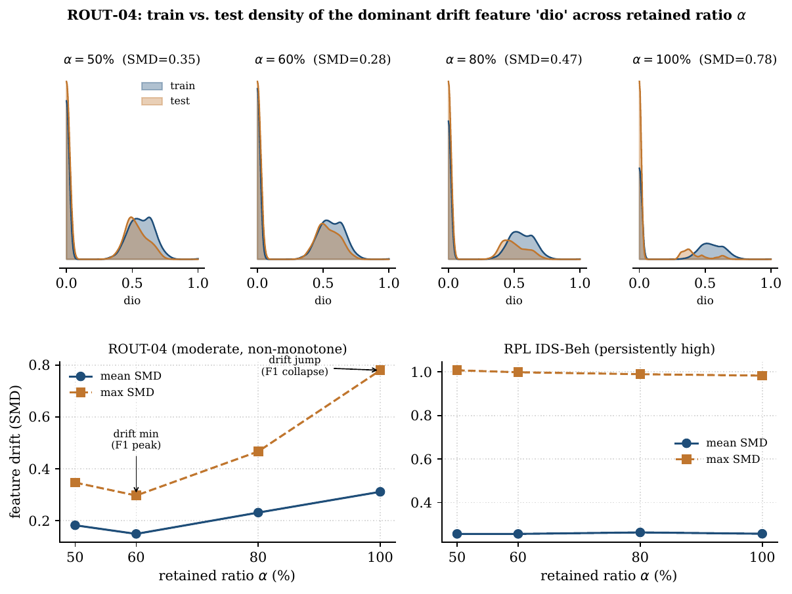

A split-aware benchmark and a lightweight temporal-adaptation method (ATA) for forward-in-time RPL-IoT intrusion detection.
Random train–test splits remain the default in RPL-IoT intrusion detection, but for time-ordered traffic they let temporally adjacent samples fall on both sides of the partition, so a high score can reflect matched-distribution pattern recovery rather than forward-in-time robustness. We make this split effect measurable: feature-level train–test drift is near zero under random-full splits (mean SMD ≈ 0.001–0.006) but rises one to two orders of magnitude under chronological retained-prefix splits (up to ≈ 1.0). To address that shift we propose Adaptive Temporal Alignment (ATA), which partitions the chronological training stream into temporal domains and aligns their latent representations while preserving class discrimination, without using future labels. Under chronological evaluation, ATA improves macro-F1 on ROUT-04 over DANN and CDAN at every retained ratio, from +3.6 (binary, α=50%) up to +8.5 (multiclass, α=60%) — significant in all but the full-history multiclass cell — while remaining lightweight (~50K parameters); on the harder RPL-Beh it is competitive. The protocol, not the backbone, materially changes which detector appears best.
In time-ordered RPL traffic, shuffling lets a test window be scored against training samples drawn from an almost adjacent point in time — temporal leakage. Under a random split the train/test distributions are matched (mean SMD ≈ 0), so high scores certify pattern recoverability, not robustness to future traffic. A chronological split restores the structural drift a deployed IDS actually faces.

dio)
separate sharply. The gap a detector must overcome is created by the protocol, not the backbone.ATA is a lightweight regularizer on top of a standard classifier, not a larger backbone. It turns one training set into a multi-source problem from the time axis, then enforces phase-invariant representations.

Unlike DANN/CDAN/CORAL (transductive source→target, need target samples at train time), ATA is target-free: it aligns observed historical phases to transfer to the unseen future.
Two representative RPL-IoT datasets with different temporal-difficulty profiles. Best per row in gold. We report honestly: ATA dominates ROUT-04, and is competitive — not uniformly best — on the harder RPL-Beh.
| Dataset / Task | ATA (ours) | CDAN | DANN | Params |
|---|---|---|---|---|
| ROUT-04 · Binary | 86.8 | 81.9 | 82.1 | ~50K |
| ROUT-04 · Multiclass | 80.8 | 75.9 | 73.9 | ~50K |
| RPL-Beh · Binary | 67.6 | 68.5 | 68.2 | ~50K |
| RPL-Beh · Multiclass | 51.5 | 49.7 | 48.8 | ~50K |

ATA uses ~1.8× fewer parameters than DANN and >60× fewer than an LSTM backbone, while leading where temporal mismatch is largest. Per-configuration confidence intervals and Welch significance tests are reported in the paper.

@article{phan6598378split,
title={Split-Aware Learning for IoT Intrusion Detection under Temporal Domain Shift},
author={Phan, Anh-Minh and Le, Khanh Toan Dang and Vu, Thai-Huy and Vo, Son Que},
journal={Available at SSRN 6598378}
}